- Documents
- Paris, BnF, ms. français 4700 (Gallica
btv1b90582908): three letters of Vincenzo Badalocchio, agent in Rome of Ludovico Gonzaga, Duke of Nevers. f. 85r, 5 December 1592: clear words and cipher in the same lines. f. 65r, 11 December 1592: a clear letter with two short cipher runs. f. 80r, 9(?) January 1593: a sheet of 18 lines, all in figures. No page has a decipherment. - New
- These are the first readings known to us of the three letters. One key reads all three. It was rebuilt from the texts; no key sheet of this cipher is known. The readings have gaps, and no name is read from the cipher.
- f. 85r
- The cipher parts of the letter are read, with gaps. It is the first reading known to us. The key is the key of the sheet of 9 January 1593, with a second table of words that this letter showed. 361 of the 383 cipher groups that carry text (94 %, a hand count) stand in words that we translate. All 11 cipher runs join the clear words around them. Not read: the seven name groups (five names; we give numbers, and guesses with grades), one word in line 11, one group in line 12, the verb of line 13, three short doubts, and the groups 199 and 299 (seven places). No period decipherment of this letter is known.
- f. 65r
- Two short cipher runs read; both complete their clear sentences; one name is not read.
- f. 80r
- The sheet is read for about nine tenths, with gaps. 717 of the 778 groups that carry text (92 %) stand in words that we translate, by a hand count; 708 of 778 (91 %) by the strict count of the audit.
- Correction
- 11 October 2026. The first version of this page gave "Navara per[ò?] si mostra prudente" and translated "Navarre [however?] shows himself prudent". The right reading is "Navara non si mostra prudente". The figure 2 is not a null: it heads a second table. The summary sentence 3 was right.
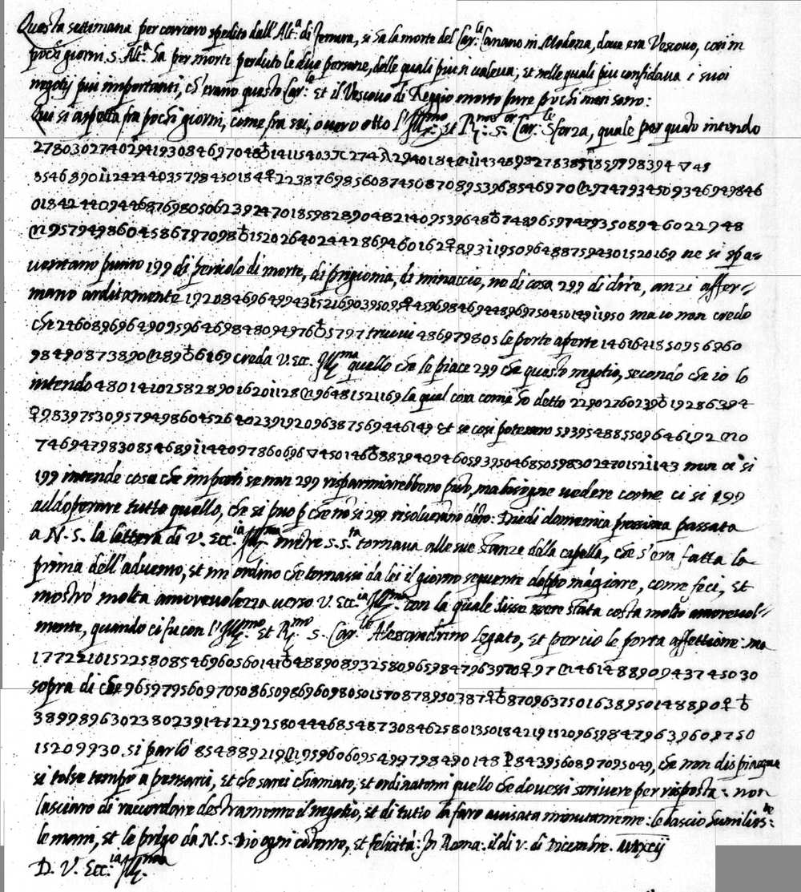
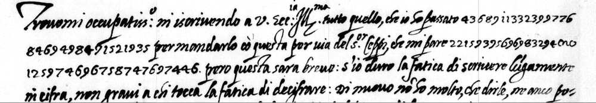
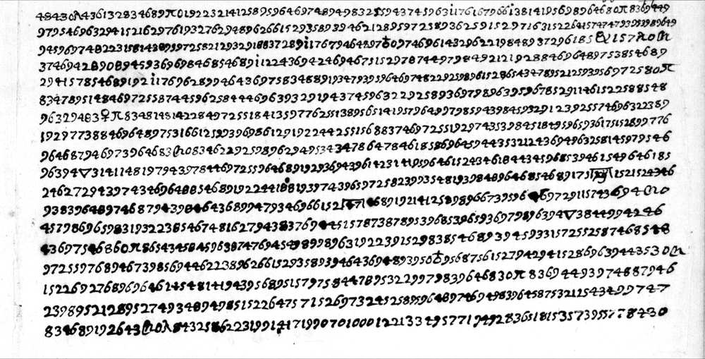
The key
The cipher text is a row of figures with no gaps. A figure 4, 8 or 9 takes the next figure: the pair is one letter. A figure 3, 5, 6 or 7 stands alone and is a vowel. The figure 0 stands alone and is a null; six signs are nulls too. A group that starts with 1 has three figures: a word of table 1. A group that starts with 2 has three figures: a word of table 2. Both tables are in the order of the alphabet, and table 2 goes on where table 1 stops. A name is the dotted stroke and three figures 1xy; the key has no value for any name. u and v are one letter.
What the cut does not settle:
- The lone 2. In six places a 2 cannot head a group of the tables: f. 85r lines 13 and 22; f. 80r line 7 (three times) and line 18. The rule takes a lone 2 there. It can be a null, a group with no value, or a slip of the pen. This is open.
- The cut is not the only one by form. The three letters have 119 groups "2xy" with a value. At 74 of them the cut "2 = null, then letters" leaves no new group without a value. The sense settles these places: the old gaps close, and the measure of sense rises on each letter (see "The controls", point 5).
- 199 and 299 stand alone between clear words on f. 85r. They are groups. A null is our best guess for their value. It is not proved. We print them as groups with no value.
In the boxes: the group, its value, and how many times it stands on f. 85r / f. 65r / f. 80r. The letters, as in the minute of the Duke (nevers-1593):
| 3 | 4 | 5 | 6 | 7 | 8 | 9 | |
|---|---|---|---|---|---|---|---|
| 4x | 43 c 0 / 1 / 23 | 44 u 1 / 1 / 3 | 45 a 9 / 0 / 11 | 46 e 16 / 1 / 46 | 47 i 4 / 1 / 10 | 48 e 17 / 0 / 22 | 49 o 6 / 1 / 8 |
| 8x | 83 b 0 / 0 / 14 | 84 c 4 / 1 / 7 | 85 d 9 / 0 / 12 | 86 f 4 / 0 / 6 | 87 g 10 / 1 / 10 | 88 h 1 / 0 / 4 | 89 l 17 / 1 / 34 |
| 9x | 93 m 5 / 1 / 20 | 94 n 16 / 1 / 39 | 95 p 14 / 1 / 19 | 96 r 25 / 2 / 51 | 97 s 18 / 3 / 44 | 98 t 23 / 2 / 23 | 99 q 1 / 0 / 1 |
The single figures and the signs:
| 3 | 5 | 6 | 7 | triangle | 0 | gate | C-n | arch | ring, cross above | ring on a cross | lambda |
|---|---|---|---|---|---|---|---|---|---|---|---|
| 3 a 31 / 1 / 63 | 5 i 27 / 3 / 46 | 6 o 23 / 6 / 52 | 7 u 12 / 2 / 30 | triangle z 2 / 0 / 2 | 0 null 108 / 1 / 18 | gate null 1 / 0 / 6 | C-n null 8 / 1 / 5 | arch null 0 / 0 / 3 | ring, cross above null 10 / 0 / 2 | ring on a cross null 7 / 0 / 1 | lambda null 1 / 0 / 0 |
Table 1 (1xy): 27 words in the order of the alphabet. A group can stand for a part of a word too.
| Group | Value | Grade | f. 85r | f. 65r | f. 80r | Words that fix the value |
|---|---|---|---|---|---|---|
| 125 | al | probable | 0 | 1 | 1 | fin AL quarto anno (f. 80r); AL servigio suo (f. 65r) |
| 129 | anno | probable | 0 | 0 | 1 | fin al quarto ANNO (f. 80r): one place. A period decipherment of another letter has "il quarto anno" |
| 135 | ben | sure | 1 | 0 | 1 | il BEN suo (f. 80r); cosi BEN il modo (f. 85r) |
| 141 | che | sure | 4 | 0 | 8 | CHE Napoli et Sicilia, CHE predice, poi CHE pure (f. 80r); le cose CHE dovea, per CHE non si vedeva (f. 85r) |
| 142 | chi | sure | 0 | 0 | 2 | monar-CHI-a, da CHI (f. 80r) |
| 143 | ci | sure | 0 | 0 | 2 | fa-CI-lissimamente, esser-CI-to (f. 80r) |
| 146 | come | sure | 2 | 0 | 1 | prudente COME disiderarebbe (f. 80r); COME hanno impedita, COME fece (f. 85r) |
| 148 | da | sure | 3 | 0 | 3 | DA esseguirsi, DA lui nascesse, DA chi (f. 80r); DA-l Navara, proposto DA (f. 85r) |
| 149 | detta | probable | 2 | 0 | 0 | a DETTA [name], la ragione DETTA (f. 85r); fixed with the order in mind |
| 152 | di | sure | 8 | 1 | 19 | DI Milano, DI Francia, pre-DI-ce, DI-ficili (f. 80r); regina DI, DI-siderio (f. 85r); conto DI lei (f. 65r); DI Pavia (f. 83r) |
| 154 | dove | sure | 1 | 0 | 1 | DOVE-re (f. 80r); DOVE-a (f. 85r) |
| 156 | egli | sure | 0 | 0 | 1 | se EGLI havesse lasciata (f. 80r) |
| 157 | et | sure | 1 | 0 | 7 | Napoli ET Sicilia, buona ET gagliarda (f. 80r); torti ET gli aggravii (f. 85r) |
| 158 | fa | sure | 0 | 0 | 1 | FA-ci-lissimamente (f. 80r) |
| 162 | far | sure | 2 | 0 | 2 | deve FAR una buona et gagliarda rimostranza, di FAR solevare (f. 80r); vogliono FAR la .. regina (f. 85r) |
| 163 | fatto | sure | 1 | 0 | 1 | sodis-FATTO (f. 80r); FATTO-li (f. 85r) |
| 164 | fece | probable | 1 | 0 | 0 | come FECE in Portogallo (f. 85r): one place; fixed with the order in mind |
| 166 | fin | probable | 0 | 0 | 1 | FIN al quarto anno (f. 80r): one place |
| 169 | Francia | probable | 4 | 0 | 0 | regina di FRANCIA, corona di FRANCIA, re di FRANCIA (f. 85r). The fourth place, after "Portogallo" in line 12, has a blot and makes no sense. On f. 80r the writer spells Francia in letters |
| 175 | giorno | sure | 0 | 0 | 2 | il primo GIORNO del suo regno; lettere del GIORNO .. di dicembre (f. 80r) |
| 177 | ha | probable | 1 | 0 | 0 | HA molto disiderio (f. 85r): one place; fixed with the order in mind |
| 184 | il | sure | 4 | 0 | 3 | IL primo giorno, IL Cardano, IL ben suo (f. 80r); aiuta IL negotio, IL modo (f. 85r); IL .. di Pavia (f. 83r) |
| 185 | in | sure | 3 | 0 | 3 | pacifico IN Francia (f. 80r); IN-tendo, ad IN-stanze, IN Portogallo (f. 85r) |
| 188 | io | sure | 0 | 0 | 1 | IO le scrissi (f. 80r) |
| 192 | la | sure | 4 | 0 | 11 | LA-sciata, bel-LA, LA monarchia (f. 80r); LA corona, per LA ragione, impedire LA (f. 85r) |
| 193 | le | sure | 1 | 1 | 5 | bel-LE imprese, LE-tere (f. 80r); LE cose (f. 85r); di LE-i (f. 65r); non LE scrive, per LE cose (f. 83r) |
| 197 | lui | sure | 0 | 0 | 1 | che da LUI nascesse (f. 80r) |
Table 2 (2xy): 24 words in the order of the alphabet, and four endings. The first page had seven of these groups as groups of two figures, with the figure 2 before them as a null.
| Group | Value | Grade | f. 85r | f. 65r | f. 80r | Words that fix the value |
|---|---|---|---|---|---|---|
| 212 | ma | sure | 0 | 0 | 7 | MA-lissimo, facilissi-MA-mente, MA impossibili, gia MA-i (f. 80r). The first page had it as 12 |
| 214 | mi | probable | 1 | 0 | 0 | e MI pare verisimile (f. 85r): one place |
| 219 | modo | sure | 2 | 0 | 0 | il MODO di ritirarsi, del MODO proposto (f. 85r) |
| 221 | molto | sure | 1 | 1 | 2 | ha .. MOLTO disiderio (f. 85r); MOLTO importare (f. 65r); essercito MOLTO temuto (f. 80r) |
| 223 | ne | sure | 1 | 0 | 5 | impatronirse-NE, le NE deve far, NE lo stato (f. 80r); NE-gotio (f. 85r) |
| 229 | non | sure | 3 | 0 | 4 | NON si mostra prudente, NON solo .. ma (two times), NON starebbono a segno (f. 80r); NON e, NON va, per che NON si vedeva (f. 85r); NON le scrive (f. 83r). The first page had it as 29 in one place |
| 232 | occasione | probable | 0 | 0 | 1 | bella OCCASIONE che si presenta (f. 80r line 1): one place. Line 18 ends "cosi bella oc-ca-[..]-o-ne" in letters |
| 238 | parte | probable | 1 | 0 | 0 | l altra PARTE (f. 85r): one place |
| 239 | per | sure | 4 | 1 | 4 | PER-se-vera, PER-di-ta, PER mie lettere, PER li mali trattamenti (f. 80r); PER quello intendo, PER la ragione, PER che (f. 85r); PER suo conto (f. 65r); PER le cose (f. 83r). The first page had it as 92, and as 39 with no value |
| 244 | qual | sure | 3 | 0 | 2 | la QUAL se egli, della QUAL io le scrissi (f. 80r); QUAL aiuta, il QUAL negotio, QUAL vogliono (f. 85r). Also for "quali" |
| 245 | quando or quanto | guess | 0 | 0 | 2 | two places on f. 80r. "Dio sa QUANDO" fits line 17; "di tanto valore QUANTO e" fits line 16. One group cannot be both: open between the two. Fixed with the order in mind |
| 246 | quel | guess | 1 | 0 | 3 | QUEL loro pretenso ius (f. 85r); in QUEL tempo (f. 80r). In two places of f. 80r the sense asks for "quei" or "quelle" (con QUEL novi disgusto; con QUEL cosi efficaci ragioni). Taken as the stem quel-. Fixed with the order in mind |
| 247 | quello | probable | 2 | 0 | 0 | per QUELLO intendo; impedita QUELLO di .. (f. 85r), where the sense asks for "quella". Taken as the stem for both |
| 255 | se | sure | 0 | 0 | 10 | haves-SE, nasces-SE, vedes-SE, es-SE-guirsi, per-SE-vera, SE egli (f. 80r). The first page had it as 55 |
| 258 | si | sure | 5 | 0 | 12 | SI mostra, SI trova, scris-SI, impos-SI-bili (f. 80r); SI ritirasse, non SI vedeva, co-SI (f. 85r). The first page had it as 58 |
| 259 | so | sure | 0 | 0 | 3 | non SO-lo (two times), SO-dis-fatto (f. 80r) |
| 264 | Spagna | sure | 2 | 0 | 2 | sodisfatto di SPAGNA, trattamenti di SPAGNA (f. 80r); di SPAGNA, a SPAGNA (f. 85r) |
| 266 | stato | sure | 0 | 0 | 2 | lo STATO di Milano (two times, f. 80r). The first page had it as 66 |
| 269 | tanto | guess | 0 | 0 | 1 | di TANTO valore (f. 80r line 16): one place; fixed with the order in mind |
| 272 | tempo | probable | 0 | 0 | 1 | in quel TEMPO nascere (f. 80r line 11): one place; fixed with the order in mind |
| 274 | tratta | probable | 2 | 0 | 1 | vien a TRATTA-re, dovea TRATTA-re (f. 85r); mali TRATTA-menti (f. 80r) |
| 276 | va | probable | 1 | 0 | 2 | non .. VA per la fantasia (f. 85r); sole-VA-re, VA-lore (f. 80r) |
| 278 | vien | probable | 2 | 0 | 0 | VIEN a trattare, VIEN ad instanze (f. 85r) |
| 286 | vogli | probable | 1 | 0 | 0 | VOGLI-no far (f. 85r): one place. The letters give "voglino"; we read "vogliono" |
| 289 | endo | probable | 2 | 0 | 3 | aven-ENDO, hav-ENDO, r-ENDO-no (f. 80r); int-ENDO (f. 85r line 7). It fails in f. 85r line 13 ("si ENDO far"): that place is not read |
| 291 | ente | sure | 0 | 0 | 5 | veram-ENTE, stinatam-ENTE, prud-ENTE, pres-ENTE, facilissimam-ENTE (f. 80r). The first page had it as 91 |
| 294 | re | sure | 2 | 1 | 6 | spera-RE, soleva-RE, del RE et della .., un RE di Francia, non solo RE pacifico, disidera-RE-bbe (f. 80r); tratta-RE (f. 85r); importa-RE (f. 65r) |
| 296 | to | probable | 0 | 0 | 2 | esserci-TO, temu-TO (f. 80r line 3) |
No value: the lone 2 (6 places) and the groups 199 and 299 (9 places); the ten name groups; and 132, 138, 145, 167, 100, 181, 194, 1, 8, 9, 25?, &, sign P, <sign>, <frame_?ij>, <frame_47>. The key with all notes: key.tsv. The decoder: decode.py.
What the key does not claim:
- 245: "quando" fits f. 80r line 17 ("Dio sa quando"). "quanto" fits line 16 ("di tanto valore quanto è"). One group cannot be both. It is open between the two.
- 246: "quel" fits two places. In two places the sense asks for "quei" or "quelle". We take it as the stem "quel-".
- 269 (tanto): one place. A guess.
- 289 (endo): four places fit. It fails in f. 85r line 13 ("si ENDO far"). That place is not read.
- 169 (Francia): three places fit. The fourth, after "Portogallo", has a blot and no sense.
- 199, 299 and the lone 2: no value.
Lines of the three letters, group by group
Each image shows one part of a line. Under the image, each box holds one group of the settled transcription and its value by the key. CAPITALS mark a group for a word or a syllable. A box in italics with the words "clear words" holds words that stand in clear on the page. The line under a group of boxes gives the word, in the letters of the cipher; the word division is ours. A hyphen marks a word that goes on. A raised dot in a word is a null. A box in grey italics stands in no word that we translate: it is a gap, a name, or a group with no value. One red question mark marks a value that is only probable; two mark a guess. An image can show a part of the next figure at its edge.
f. 85r, 5 December 1592
Line 8: the line with the Infanta of Spain, as the name group .195
The run ends a long cipher passage; the clear words "ne si spa-" go on. The name group .195 is not read from the cipher. History leaves one person: the Infanta of Spain. Five groups before "di Spagna" are a gap: "f u s t" ("a gusto" asks for another figure). The key gives "vogli-n-o"; we read "vogliono".
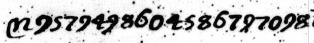
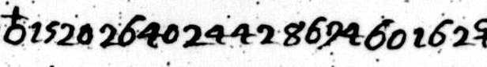
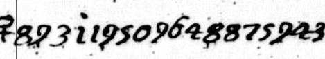
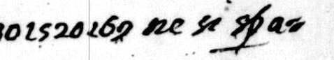
punto a [f u s t] di Spagna, qual vogliono far la [nome 195] regina di Francia, ne si spa-
at all to the [taste?] of Spain: they want to make [name 195] Queen of France, and they are not
The reading of line 8 in f085r/reading.md. In the Italian, bold = from cipher.
Line 10: a cipher run that completes a clear sentence
The clear words "anzi affer-mano arditamente" need an object. The run gives it: "la corona di Francia appartenersi a detta [name 195]". Then the clear text goes on: "ma io non credo". The value 169 (Francia) is probable.
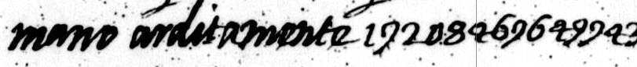
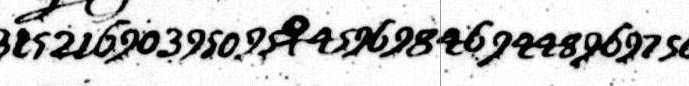
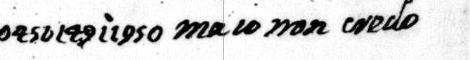
mano arditamente la corona di Francia appartenersi a detta [nome 195]; ma io non credo
assert boldly that the crown of France belongs to the said [name 195]. But I do not believe
The reading of line 10 in f085r/reading.md. In the Italian, bold = from cipher.
Line 25: two runs around the clear words "si parlò"
The first run ends the sentence of line 24: "il modo di ritirarsi di qua". The second run completes "Si parlò ...": "del modo proposto da [sign P] Capolupo"; the clear text goes on: "che non dispiaque". The sign P is not read. The cipher writes "qa" for "qua".
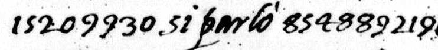
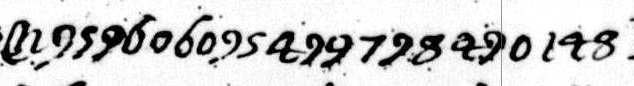
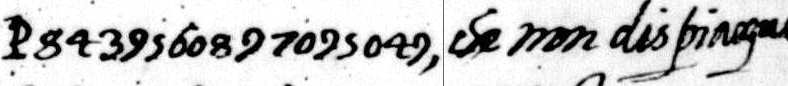
di qua. Si parlò del modo proposto da [segno P] Capolupo, che non dispiaque
from this side. We spoke of the way that [sign P] Capilupi proposed, which did not displease;
The reading of line 25 in f085r/reading.md. In the Italian, bold = from cipher.
f. 65r, 11 December 1592
Line 1
The first run starts at the end of the line: "che io ho passato col [name 133] per suo". The name is not read.
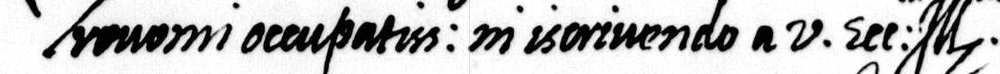
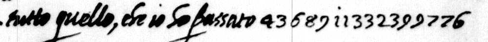
Trovomi occupatiss.mo in scrivendo a V. Ecc.ia Ill.ma tutto quello, che io ho passato col [nome 133] per suo
I am very busy: I write to Your Excellency all that passed between me and [name 133] on your
The reading of line 1 in f065r/reading.md. In the Italian, bold = from cipher.
Line 2
The first run ends here: "conto di lei". The second run starts after "che mi pare": "molto importare".
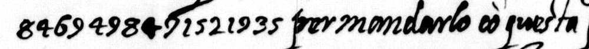
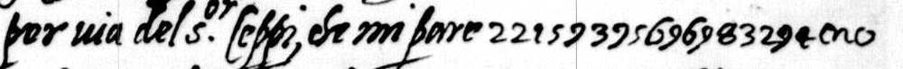
conto di lei, per mandarlo con questa per via del S.or Ceppi, che mi pare molto importare
account, to send it with this letter by way of Signor Ceppi; it seems to me to be of great weight
The reading of line 2 in f065r/reading.md. In the Italian, bold = from cipher.
Line 3
The second run ends here: "al servigio suo". Then the letter goes on in clear.
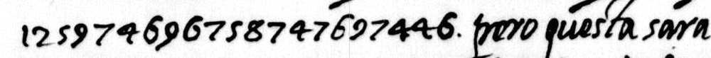
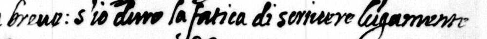
al servigio suo. però questa sarà breve: s'io havrò la fatica di scrivere longamente
for your service. So this letter will be short. If I have the labour to write at length
The reading of line 3 in f065r/reading.md. In the Italian, bold = from cipher.
f. 80r, 9(?) January 1593
Line 6: the corrected sentence on Navarre
The line starts in the middle of the word "impossi-bili". The figures 2 2 9 are the group 229 (non). The first page cut them as two nulls and the start of 92 (per), and it read "Navara per[ò?] si mostra prudente".
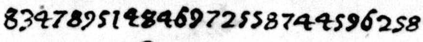
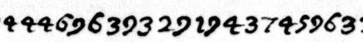
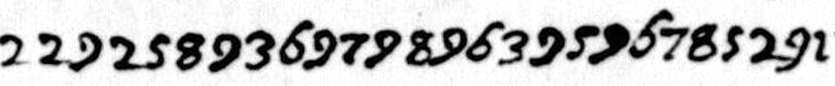
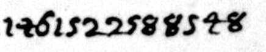
bili da esseguirsi veramente. Navara non si mostra prudente come diside-
sible to carry out in truth. Navarre does not show himself prudent in the way that
The reading of line 6 in reading.md. The first reader counts 43 of the 43 groups of this line that carry text as "in sense".
Line 10: the monarchy that Cardano foretells
The line starts in the middle of "spe-ranza". Three groups are a gap: "r e l". With 99 (q) for 96 (r) the word is "quella"; this is probably a slip of our transcription, and we did not check the image again.
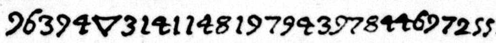
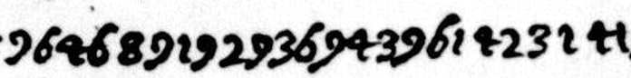
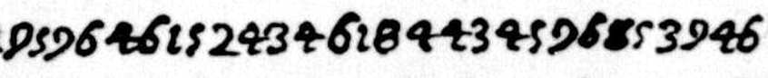
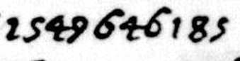
ranza che da lui nascesse r e l la monarchia che predice il Cardano dovere in
that from him would be born [that?] monarchy which Cardano foretells must, in
The reading of line 10 in reading.md. The first reader counts 42 of the 45 groups of this line that carry text as "in sense".
Line 13: the remonstrance
The last group, 246, is a guess: "quel" does not agree with "così efficaci ragioni" in the next line.
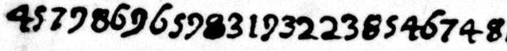
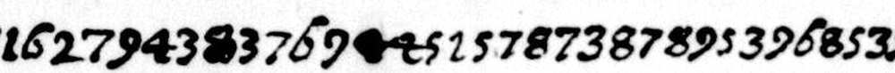
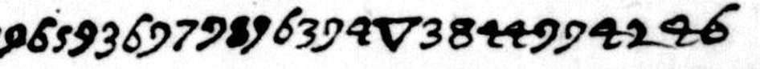
autorità, le ne deve far una buona et gagliarda rimostranza con quel(?)
authority, must make him a good and vigorous remonstrance about it, with [those?]
The reading of line 13 in reading.md. The first reader counts 48 of the 48 groups of this line that carry text as "in sense".
Line 15: a rising in the State of Milan
The line starts in the middle of "vedes-se". The first page had "un ·n di Francia" here. The group 294 is "re".
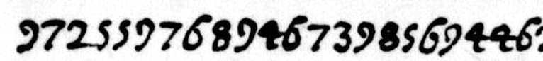
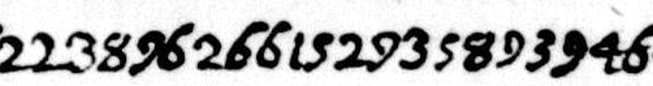
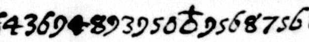
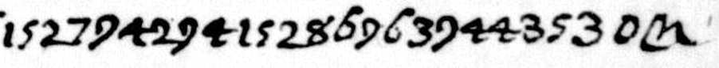
sse solevatione ne lo stato di Milano con l'appogio di un Re di Francia,
a rising in the State of Milan with the support of a King of France
The reading of line 15 in reading.md. The first reader counts 47 of the 47 groups of this line that carry text as "in sense".
Line 3: a line that the first page did not read
The line starts in the middle of "impatro-nirsene". The first page gave 24 groups of this line as not read. The name group .176 and the sign & are still not read.
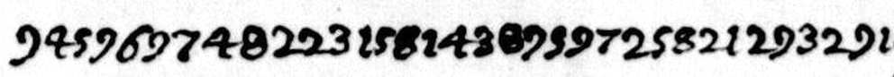
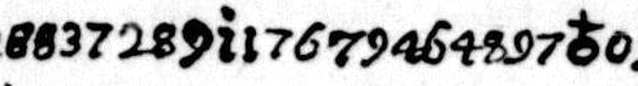
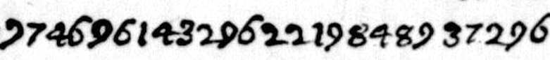
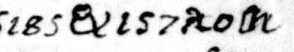
nirsene facilissimamente, havendo [nome 176] uno essercito molto temuto in [&] et
of it very easily, as [name 176] has an army that is much feared in [a place that is not read]; and
The reading of line 3 in reading.md. The first reader counts 37 of the 39 groups of this line that carry text as "in sense".
The readings, in short
f. 85r, 5 December 1592. Cardinal Sforza is expected in Rome. He comes to treat what [name 143] was to treat, at the instance of [name 124]. Spain is against the business. The Spaniards want [name 195] as Queen of France and say that the crown belongs to her. The plan is to make [name 128] King of France; the verb of this sentence is not read. On 30 November the Pope told Badalocchio that he much desires that the Duke withdraw from Navarre. Badalocchio answered with the wrongs done to the Duke by the other side. They spoke of a way that Capilupi proposed.
f. 65r, 11 December 1592. Badalocchio is busy: he writes down all that passed between him and [name 133] on the Duke's account. He sends it with this letter, because it seems of great weight for the Duke's service.
f. 80r, 9(?) January 1593.
- The troubles of the Spanish lands in Italy make an opening. If Navarre and [name 176] were [..], they could hope to raise the State of Milan, very ill content with Spain, and to take it with ease. [Name 176] has an army that is much feared.
- The death of [name 122] would add to this. But the heresy of the King and of [name 176] makes such fine enterprises not only hard but impossible.
- Navarre does not show himself as prudent as his own good asks, because he still perseveres stubbornly in his heresy, to the fourth year. If he had left it on the first day of his reign, he would be not only a king at peace in France: there would be hope of the monarchy that Cardano foretells, of which Badalocchio wrote in his letters of December, number 47.
- The Duke is on the spot and has authority. So he must make the king a good and vigorous remonstrance, with reasons beyond the loss of the soul: with a rising in Milan and the support of a King of France of such worth, Naples and Sicily would not stay in line,
- for the ill treatment by Spain. God knows when so fine an occasion will come again.
The names are numbers in the cipher: see the table below. The Italian line by line, the running text and the translations: f085r/reading.md, f065r/reading.md, reading.md.
The names
No name is read from the cipher. A name is a dotted stroke with three figures, and the key has no value for it. The grades say what the sentence and history allow.
| Group | Places | The sentence | Our guess | Grade |
|---|---|---|---|---|
| .195 | f. 85r lines 8, 10 | "vogliono far la ... regina di Francia"; "la corona di Francia appartenersi a detta ..." | The Infanta of Spain (Isabella Clara Eugenia) | Settled as a person. The word of the key is not known |
| .143 | f. 85r lines 5, 15 | "le cose che dovea trattare il ..."; "come hanno impedita quella di ..." | Cardinal Gondi | Probable |
| .144 | f. 85r line 15 | "la venuta del ... Sforza" | The word "Cardinale" | Probable |
| .124 | f. 85r line 6 | "vien ad instanze del ..., qual aiuta il negotio" | The Grand Duke of Tuscany | Probable. No book names him for these weeks |
| .122 | f. 80r line 4 | "avenendo la morte del ..." | The King of Spain | Probable |
| .176 | f. 80r lines 1, 3, 5 | "la heresia del Re et della ..."; "havendo ... uno essercito molto temuto" | The Queen of England | Probable |
| .128 | f. 85r line 13 | "far ... re di Francia, la qual cosa non va per la fantasia a Spagna" | Two candidates: Navarre under a title, or the Cardinal of Bourbon-Vendôme. We do not choose | Open |
| .133 | f. 65r line 1 | "tutto quello che io ho passato col ... per suo conto di lei" | None | Open |
| .38, .78 | f. 80r lines 1, 18 | two figures only after the stroke | None | Open |
The reasons for each grade, with the books and their pages: evidence/audit.md, part 5.3.
The controls
Each control has its number and its limit.
- The held-out test. The key and the cut of our first page were made on f. 80r alone. We applied them, with no change, to f. 85r, which they had not seen. 534 of the 569 groups (93.8 %) have a value. 313 of the 402 groups that are not nulls (77.9 %) already have the value and the place that the final reading keeps in a word that we translate. For f. 65r: 43 of 45 groups, and 27 of 39 (69.2 %).
decode.pyrepeats this from key_first_page.tsv.
Limits: it is the same writer and the same cipher. The test shows that the old key was real. It does not test the new values. "The final reading keeps" uses the hand list of the reader. - The blind audit of the key. A fresh reader had the three transcriptions, the cut rule, and the key with 24 values hidden. It restored 24 of 24.
Limits: the reader is a model of the same family as the first reader. The two can share a habit. The cut was given. So the test does not test the cut, and it does not test the figures. The reader used the order of the alphabet for 19 of the 24 values; it fixed 5 by the sense alone. The pool holds only values with 3 places or more: the weak values of the key are not in it. The session of the reader held a one-line index of the notes of the project (titles only, no key value). - The order of the alphabet, all values. The 27 words of table 1 stand in the order of the alphabet by their numbers. So do the 24 words of table 2. So do both as one list of 51. 0 of 20,000 shuffles are as good.
Limits: the reader of f. 85r knew that table 1 was in order before it fixed any new value. Seven values of the second round and eleven of the first round were fixed "with the order in mind". So this form is not blind. With the four endings, table 2 is not in full order (rank correlation 0.598; 16 of 20,000 shuffles are as high). - The order of the alphabet, strict form. Only the values that were fixed before anybody saw the order. The ten words of table 1 of the first round: in order; the chance is 1 in 3.6 million. The five words that the first page had as groups of two figures (12 ma, 29 non, 55 se, 58 si, 66 stato): put the 2 before them, and they are 212, 229, 255, 258, 266, in order; the chance is 1 in 120 (152 of 20,000 shuffles). The ten and the five as one list: 15 of 15 in order, 0 of 20,000 shuffles.
Limits: five values in order is a weak test by itself. The strength is in the list of 15, and in the fact that nobody knew of a second table when the five were fixed. - The cut rule against rival rules. Figures left over or forced into a group with no value: on f. 85r the old rule leaves 60, the new rule 2; on f. 65r 3 and 0; on f. 80r 44 and 28. The share of the letters that stand inside dictionary words of four letters or more rises from 56 to 72 % (f. 85r), from 37 to 54 % (f. 65r) and from 58 to 66 % (f. 80r). Real Italian of this writer gives 67 to 72 % by the same measure.
Limits: two rival rules for the lone 2 score as well as ours (71.5 and 70.1 % on f. 85r). The measure cannot tell them apart. The word list is not in this repository. - Shuffled keys. The four-letter score of the cipher runs of f. 85r and f. 65r is -4.148 on 510 windows. Real Italian scores -4.14 in the median. 2,000 keys with shuffled values score -5.637 in the mean and -5.072 at best. The key is 8.5 standard deviations above the mean. The true key on 2,000 shuffled orders of the groups: mean -5.253, best -5.025; the true order is 17.5 standard deviations above. For f. 80r the audit gives -4.01 with the new cut and -4.16 with the old one.
Limits: the table of Italian four-letter groups is not in this repository.decode.pydoes not repeat the scores. The scores of our first page (-4.18; 8.3 and 21.2 standard deviations) belong to the old cut. - The halves of f. 85r. The letters, the words of the first page and the new values that stand in lines 5 to 13 give 279 of the 289 groups of lines 14 to 25 and of f. 65r (96.5 %). The reverse gives 246 of 270 (91.1 %).
Limits: the key was made on the whole page. "Stands in a half" means only that the group occurs there. - The cipher runs that complete their clear sentences. f. 85r has 11 cipher runs between clear words, and f. 65r has 2. 13 of 13 join the clear words at both ends. 11 make a full sentence (the names stay numbers). 2 do not: "e o s t i" in line 11, and the run that ends with 169 in line 12. Three of the 11 have a doubt inside. With the key and the cut of the first page: 0 of 13 complete.
Limits: "a full sentence" is the judgement of the reader. The clear words are one reading from tiles. - Two transcription passes for each letter. f. 85r: pass A has 949 figures and signs, pass B (blind) has 920; 906 are the same (97.0 %); pass B and the settled text agree in 916 (99.6 %). f. 65r: 72 of 72. f. 80r: 1,561 of 1,595 places (97.9 %).
Limits: pass A was not blind to the sense on any letter. Pass A of f. 85r has 29 figures too many. On f. 85r four places of the settled text differ from the blind pass, and the sense guided the choice in at least two of them. - The facts, against the same writer. Two period decipherments of other cipher letters of Badalocchio, and his clear letter of 9 January, treat the same matter in the same words. f. 80r has "persevera nella sua heresia fin al quarto anno"; the decipherment of 11 December has "Volge il quarto anno" and "persevera heretico". f. 85r has the Pope's demand "che ella si ritirasse dal Navara"; the decipherment of 6 February has "me rispose che lasci Navara", and Badalocchio's answer "quello ch'altra volta gli ho detto".
Limits: these are not decipherments of our letters. They support the sense. They do not test single groups. - The facts, against printed history. Pages as the audit gives them:
- Cardinal Gondi was stopped on his way to Rome in October 1592, under a Spanish threat: L. von Pastor, History of the Popes, vol. XXIII, pp. 67-68; H. de L'Epinois, La Ligue et les papes (1886), p. 573.
- Spain pressed in Rome for the election of the Infanta in October 1592: L'Epinois, p. 574. Philip II proposed his daughter as Queen of France in 1593: Pastor, p. 71.
- The four ways that were weighed in Rome in October 1592 (Navarre converted, another Bourbon prince, the Infanta, a prince of Lorraine): L'Epinois, p. 574.
- The Pope was in France with the legate Cardinal Alessandrino in 1571: Pastor, p. 22.
- The Pope sets Navarre beside the Queen of England at the end of January 1593: Pastor, p. 68.
- Henri IV was king from 2 August 1589. January 1593 is in his fourth year.
- What was not found. Capilupi's proposal (f. 85r line 25) is not in the decipherments and not in the books. The prophecy of Cardano (f. 80r line 10) is not identified; the reading of the words is sure.
The first blind audit of 11 October (10 of 10 hidden values restored) had the old cut. The audit, with the tables of the facts and their sources: evidence/audit.md. The files that the fresh reader had: evidence/blind_audit_2/. The two period decipherments of other letters: evidence/period_decipherments.md. The 72 changed places of f. 80r: evidence/changes_f80r.txt.
What stays open
- All names. A list of the Duke's cipher names would settle them. So would the cipher originals of the two period decipherments.
- f. 85r: "a f u s t" in line 8; "e o s t i" in line 11; the group 169 after "Portogallo" in line 12; the verb of line 13 (289) and the lone 1; "f i" in line 23; the sign P in line 25; the r of "Nava·a" in line 22.
- f. 65r: the name .133.
- f. 80r: the groups 132, 138, 145 and 167; "c s se" in line 7; "r a si" and "r e l la" in lines 9 and 10 (probably two slips of our transcription, 96 for 99; we did not check the image again); "u i u" in line 17; the sign &; the 34 groups of filler at the end.
- The key: the lone 2; 199 and 299; 245 (quando or quanto); 246 (quel-); 269.
- The day of the clear letter of January is "ix(?)". "x" (10) is possible.
- The facts: Capilupi's proposal; the prophecy of Cardano; the mission of Cardinal Sforza in print.
What would settle it:
- Images of BnF fr. 4718, ff. 6 to 11. Then fr. 4718 no. 3 with fr. 3982 ff. 194r-195r is a known plaintext of 63 lines for this cipher.
- BnF fr. 4701, f. 63 bis, and the key sheet of the cipher that Badalocchio sent in September 1592, if it survives.
- Paruta's dispatches from Rome of December 1592 and January 1593, for Cardinal Sforza.
- A colour scan of the three pages, for the blots.
History of our own statements
- 11 October 2026, 18:28: the first page. It gave f. 80r alone, as "read for about four fifths, with gaps": 617 of 792 groups (78 %). It had the old cut: "the figures 2 and 0 stand alone and are nulls", with eight groups of two figures for words and syllables (12 ma, 55 se, 58 si, 66 stato, 91 ente, 92 per, 29 non, 39). It printed the sentence on Navarre without "non": "Navara per[ò?] si mostra prudente", in English "Navarre [however?] shows himself prudent". Sentence 3 of its summary had the right sense ("Navarre is not as prudent as his own good asks"). The Italian line and the English line under it had the wrong one. That version is in the history of the repository.
- 11 October 2026, later: the correction. We read f. 85r. It showed that the figure 2 heads a second table of words. An audit by a separate agent then tested the new key and the new cut on the three letters. The sentence is "Navara non si mostra prudente". The old key was not wrong in its letters or in table 1: with no change it already gave 77.9 % of the final values of f. 85r. It was wrong in the cut of every group that starts with 2. We changed: the title, the cut rule, the key table, the Italian and the English of all 18 lines of f. 80r, the counts (819 groups, not 919; "about nine tenths", not "about four fifths"), and the names (three figures, not two). We added the letters of 5 and 11 December 1592. The list of the 72 changed places of f. 80r is evidence/changes_f80r.txt; the verdict on each changed word is in evidence/audit.md, part 4. The audit found no place where the old reading was better.
Earlier work and credits
- G. Cassiani, 2014 and 2016. His two articles describe Badalocchio's work in Rome and the letters of Tommaso Bozio and the Duke (the references are in nevers-1593). Of fr. 4700 he cites f. 67r, f. 72r-v (the minute), ff. 89r-v and 100r (Capilupi), and f. 109r-v. He does not cite f. 85, f. 65 or ff. 79-80. He quotes no cipher and no reading of cipher.
- How f. 85r stands to f. 67r. G. Cassiani cites the clear letter of 5 December 1592 on f. 67r, for its news of Tarugi and of the archbishopric of Avignon. f. 85r bears the same date. By our inventory they are two letters of the same day: f. 67 is one leaf, clear, about 14 lines, with its own date line and its own address on the back; ff. 85-86 are a separate letter, with its own date line, its signature, and its address on f. 86v. The news of Tarugi is on f. 67r. The cipher is on f. 85r only. Both letters name Cardinal Alessandrino: by Cassiani (2014, p. 395, note 44), f. 67r says that Tarugi was in France with him; on f. 85r the Pope says the same of himself. The inventory is one reading from small images.
- Period decipherments. Two exist, for other cipher letters of Badalocchio: BnF fr. 3982 no. 96, ff. 194r-195r (11 December 1592), and fr. 3983 no. 35, ff. 74r-75r (6 February 1593). They are in the hand of a clerk. We found them after our first reading. The readings were made without them. They are not decipherments of f. 80r, f. 85r, or the runs of f. 65r and f. 83r: for these we found none. See evidence/period_decipherments.md.
- D. Bourdeau. His cyphersolver has one line that lists fr. 4700 nos. 38-46 among the letters to do. It has no reading of them. We copied nothing from it.
- S. Tomokiyo described the cipher keys of the Duke of Nevers in BnF fr. 3995 (Cryptiana, "Ciphers of the Duke of Nevers"). The older key of Badalocchio is his no. 56. A note on the back of that key says that it was replaced in September 1592. The folder nevers-1593 gives the note and the reasons why the cipher of 1593 is another one. His pages, as far as we had them saved, do not name Badalocchio's letters of fr. 4700.
NoAutopilot/cipher-lab: no work on fr. 4700.
Credits:
- Gennaro Cassiani described the work of Vincenzo Badalocchio in Rome and the letters of Tommaso Bozio and the Duke of Nevers (2014, 2016).
- Satoshi Tomokiyo described the cipher keys of the Duke of Nevers in BnF fr. 3995, with the older key of Badalocchio.
- Daniel Bourdeau listed fr. 4700 nos. 38-46 as letters to do.
- Bibliothèque nationale de France / Gallica provides the page images. The Internet Archive provides the texts of the printed books.
- The work was done by a model: Claude, by Anthropic, running as Claude Code with subagents. Paolo Rosson directed it. No palaeographer has checked it.
What was searched for an earlier reading, and what was not opened: README.md. The minute of the Duke, its key and the two ciphers of Badalocchio: nevers-1593. Folder: badalocchio-1593.